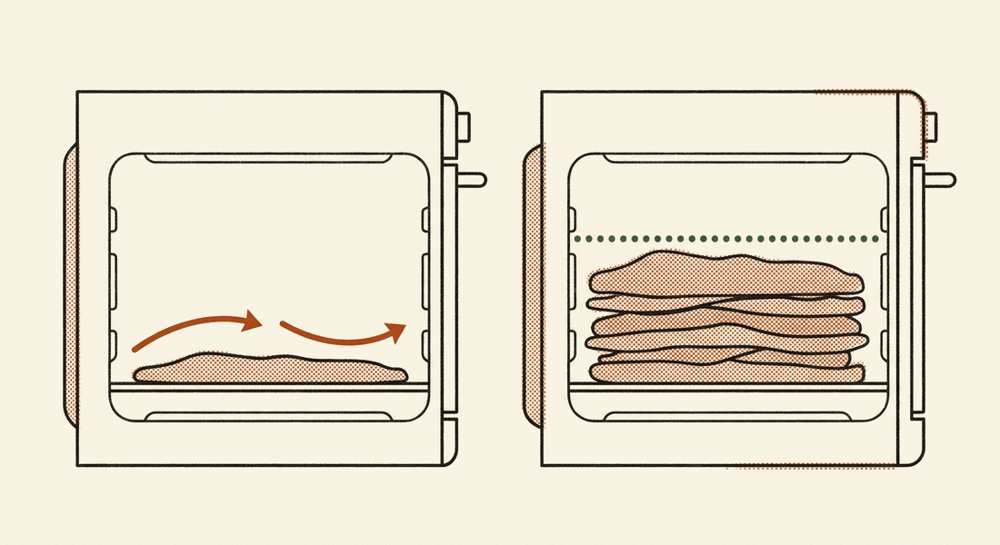

Guides · capacity
A no-hype checklist for comparing air fryer capacity
Litres, quart counts and 'feeds a family of' claims measure different things. Here is how to read each one without being sold something.
A reading list for spec sheets. It contains no measurement we took, because we took none, and no recommendation, because the products on our desk are still unresolved identifiers.
Capacity is the number a buyer checks first and understands last. It is also the field where a listing can be technically accurate and practically useless at the same time, because 'volume' can mean the basket, the chamber, or the chamber including whatever the racks displace. Six checks fix that in about five minutes.
1. Find out what the volume figure is the volume of
Ask one question of every listing: is this the cooking chamber or the whole interior including door and element housing? Manufacturers state both. Some say 'capacity to the fill line', some say 'total chamber', and some only say a number. Where the definition is missing, treat the figure as unverified rather than as a small-print win.
2. Convert volume into a single layer, because that is how crisping works

Anything you want browned on two faces needs to lie flat with air around it. So take the usable area of the basket floor - length × width, from the dimensions the listing states, not from a photo - and count how many of your actual items fit in one layer. Wings: count them. Fries: a shallow pile is fine. A whole small bird: it either stands inside the stated height or it does not.
The four numbers worth writing down before you compare two models:
- Basket floor area in cm, from the product dimensions table (not the box dimensions)
- Height clearance to the element or the drawer face, same table
- Rack count, if the unit claims more than one layer - because two real layers beat one big one on throughput
- Whether the stated number is per layer or for the unit
3. Distrust the household-size sentence
'Feeds a family of four' is a marketing phrase, and it is usually the least verifiable sentence on the page. Two listings claiming to feed four can differ by a full rack. If a page offers a household-size claim and no floor area, you are being asked to accept a conclusion without its premise - which is also precisely the kind of overbroad claim the Associates terms forbid us to repeat, so we do not repeat it here either.
You must not make inaccurate, overbroad, deceptive or otherwise misleading claims about any Product…
We apply that rule to our own copy, not just to a brand's: no page on this site will tell you a basket feeds four, six or sixteen. It will tell you which field to read so that you can decide what it feeds you.
4. Check the batch count, not the batch size
The practical capacity question is how many runs you make for one meal. A smaller drawer you can fill, shake and refill in a couple of minutes often beats a big chamber you must rotate and monitor - and it is the answer you cannot read off a litre figure. Two proxies are on the listing: whether the drawer pulls out cleanly with one hand, and whether the controls can be adjusted without interrupting the run.
5. Look for the picture with something ordinary in it
Scale is the least reliable thing in appliance photography. A gallery of golden food in an empty basket tells you nothing. What helps: an image with a hand, a standard tray, a chicken drumstick, or a tape measure. If the gallery is all beauty shots and the dimensions table is the only place size appears, the listing is asking you to guess - and guessing is how returns happen.
6. Then check what the noise and heat do to your counter
A bigger chamber usually means a bigger fan and a hotter exterior, both of which change where you can put it. Read the clearance requirement in the manual and compare it against the actual space - including the wall behind and anything above. A unit that technically fits a shelf but violates its own clearance note is not a fit; it is a future return.
A worked comparison you can copy
| What I need to cook | Field I look for | What would make me reject it |
|---|---|---|
| Two portions of anything flat and crisped | Basket floor area, single layer | Only a litre figure and no dimensions table |
| One tray for six people, once a week | Rack count and per-layer area | 'Family of X' text with no area at all |
| Whole small bird or a deep dish | Vertical clearance to the element | A drawer that cannot be lifted out with the food inside |
| Frozen snacks, daily, badly lit kitchen | Window, controls reachable mid-run | A chamber so large it takes a run to preheat for 200 g of fries |
| Counter is a shared 40 cm strip | Body footprint plus clearance, from the manual | Any listing that states box dimensions but not body dimensions |
This table is a template. Fill the middle column from each listing while you compare, and the last column decides for you.
What this checklist cannot do
Not answered by this page
- Tell you which brand's figure is honest. We have not verified any brand.
- Substitute for the manual, which is the only document with a binding clearance and capacity statement.
- Give you a price or a value judgement. Prices require an Amazon-served link or an approved API on this desk, and we hold neither.
- Predict how your household behaves: capacity regret is usually a storage and washing story, not a litres story.
One-line answer
Compare floor area in a single layer and rack count; ignore the household-size sentence; and if a listing will not tell you what its volume figure means, that is your answer about the listing, not about the product.